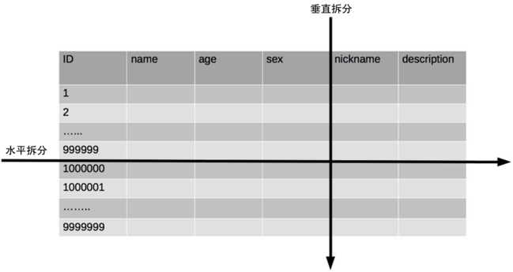
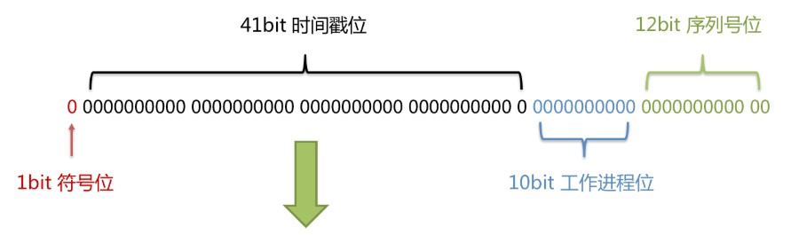

Part02-MyBatis-Plus¶
01-MyBatis-Plus 入门¶
一、简介¶
1、官网¶
2、特点¶
MyBatis-Plus（简称 MP）是一个 MyBatis 的增强工具，在 MyBatis 的基础上只做增强不做改变，为简化开发、提高效率而生。
3、支持数据库¶
mysql 、mariadb 、oracle 、db2 、h2 、hsql 、sqlite 、postgresql 、sqlserver 、presto 、Gauss 、Firebird
Phoenix 、clickhouse 、Sybase ASE 、 OceanBase 、达梦数据库 、虚谷数据库 、人大金仓数据库 、南大通用数据库 、
4、框架结构¶
二、快速入门¶
1、创建数据库¶
创建数据库：mybatis_plus
创建数据表：user
CREATE TABLE user
(
id BIGINT(20) NOT NULL COMMENT '主键ID',
name VARCHAR(30) NULL DEFAULT NULL COMMENT '姓名',
age INT(11) NULL DEFAULT NULL COMMENT '年龄',
email VARCHAR(50) NULL DEFAULT NULL COMMENT '邮箱',
PRIMARY KEY (id)
);
INSERT INTO user (id, name, age, email) VALUES
(1, 'Jone', 18, 'test1@baomidou.com'),
(2, 'Jack', 20, 'test2@baomidou.com'),
(3, 'Tom', 28, 'test3@baomidou.com'),
(4, 'Sandy', 21, 'test4@baomidou.com'),
(5, 'Billie', 24, 'test5@baomidou.com');
2、创建SpringBoot工程¶
3、引入依赖¶
注意：SpringBoot版本修改为2.3.4
<dependencies>
<dependency>
<groupId>org.springframework.boot</groupId>
<artifactId>spring-boot-starter</artifactId>
</dependency>
<dependency>
<groupId>com.baomidou</groupId>
<artifactId>mybatis-plus-boot-starter</artifactId>
<version>3.4.1</version>
</dependency>
<dependency>
<groupId>mysql</groupId>
<artifactId>mysql-connector-java</artifactId>
<scope>runtime</scope>
</dependency>
<dependency>
<groupId>org.projectlombok</groupId>
<artifactId>lombok</artifactId>
<optional>true</optional>
</dependency>
<dependency>
<groupId>org.springframework.boot</groupId>
<artifactId>spring-boot-starter-test</artifactId>
<scope>test</scope>
<exclusions>
<exclusion>
<groupId>org.junit.vintage</groupId>
<artifactId>junit-vintage-engine</artifactId>
</exclusion>
</exclusions>
</dependency>
</dependencies>
4、修改配置文件¶
在 application.properties 配置文件中添加 MySQL 数据库的相关配置：
#mysql数据库连接
spring.datasource.driver-class-name=com.mysql.cj.jdbc.Driver
spring.datasource.url=jdbc:mysql://localhost:3306/mybatis_plus?serverTimezone=GMT%2B8&characterEncoding=utf-8
spring.datasource.username=root
spring.datasource.password=123456
**注意：**如果定义了mysql驱动的依赖的版本为5，例如
<version>5.1.47</version>
则数据库连接配置为
#mysql数据库连接
spring.datasource.driver-class-name=com.mysql.jdbc.Driver
spring.datasource.url=jdbc:mysql://localhost:3306/mybatis_plus?characterEncoding=utf-8&useSSL=true
spring.datasource.username=root
spring.datasource.password=123456
5、创建实体类¶
创建包 entity，编写实体类 User.java，并使用lombok简化``实体类的编写
package com.atguigu.mybatisplus.entity;
@Data
public class User {
private Long id;
private String name;
private Integer age;
private String email;
}
查看编译结果
6、创建mapper接口¶
创建包 mapper，编写Mapper 接口： UserMapper.java
package com.atguigu.mybatisplus.mapper;
public interface UserMapper extends BaseMapper<User> {
}
7、启动类添加注解¶
在 Spring Boot 启动类中添加 @MapperScan 注解，扫描 Mapper 文件夹
package com.atguigu.mybatisplus;
@SpringBootApplication
@MapperScan("com.atguigu.mybatisplus.mapper")
public class MybatisPlusApplication {
......
}
8、测试¶
添加测试类，进行功能测试：
package com.atguigu.mybatisplus;
@SpringBootTest
class MybatisPlusApplicationTests {
//@Autowired //默认按类型装配。是spring的注解
@Resource //默认按名称装配，找不到与名称匹配的bean，则按照类型装配。是J2EE的注解
private UserMapper userMapper;
@Test
void testSelectList() {
//selectList()方法的参数：封装了查询条件
//null：无任何查询条件
List<User> users = userMapper.selectList(null);
users.forEach(System.out::println);
}
}
通过以上几个简单的步骤，我们就实现了 User 表的 CRUD 功能，甚至连 XML 文件都不用编写！
补充、查看sql输出日志¶
#mybatis日志
mybatis-plus.configuration.log-impl=org.apache.ibatis.logging.stdout.StdOutImpl
02-基本CRUD¶
一、通用Mapper¶
MP中的基本CRUD在内置的BaseMapper中都已得到了实现。
创建MapperTests测试类：
package com.atguigu.mybatisplus;
@SpringBootTest
public class MapperTests {
@Resource
private UserMapper userMapper;
}
1、Create¶
@Test
public void testInsert(){
User user = new User();
user.setName("Helen");
user.setAge(18);
//不设置email属性，则生成的动态sql中不包括email字段
int result = userMapper.insert(user);
System.out.println("影响的行数：" + result); //影响的行数
System.out.println("id：" + user.getId()); //id自动回填
}
2、Retrieve¶
@Test
public void testSelect(){
//按id查询
User user = userMapper.selectById(1);
System.out.println(user);
//按id列表查询
List<User> users = userMapper.selectBatchIds(Arrays.asList(1, 2, 3));
users.forEach(System.out::println);
//按条件查询
Map<String, Object> map = new HashMap<>();
map.put("name", "Helen"); //注意此处是表中的列名，不是类中的属性名
map.put("age", 18);
List<User> users1 = userMapper.selectByMap(map);
users1.forEach(System.out::println);
}
3、Update¶
@Test
public void testUpdate(){
User user = new User();
user.setId(1L);
user.setAge(28);
//注意：update时生成的sql自动是动态sql
int result = userMapper.updateById(user);
System.out.println("影响的行数：" + result);
}
4、Delete¶
@Test
public void testDelete(){
int result = userMapper.deleteById(5);
System.out.println("影响的行数：" + result);
}
二、通用Service¶
MP中有一个接口 IService和其实现类 ServiceImpl，封装了常见的业务层逻辑
1、创建Service接口¶
创建 service 包，创建 UserService，继承 IService
package com.atguigu.mybatisplus.service;
public interface UserService extends IService<User> {
}
2、创建Service实现类¶
创建 impl 包，创建 UserServiceImpl，继承 ServiceImpl，实现 UserService
package com.atguigu.mybatisplus.service.impl;
@Service
public class UserServiceImpl extends ServiceImpl<UserMapper, User> implements UserService {
}
3、创建测试类¶
创建ServiceTests
package com.atguigu.mybatisplus;
@SpringBootTest
public class ServiceTests {
@Resource
private UserService userService;
}
4、测试记录数¶
@Test
public void testCount(){
int count = userService.count();
System.out.println("总记录数：" + count);
}
5、测试批量插入¶
@Test
public void testSaveBatch(){
// SQL长度有限制，海量数据插入单条SQL无法实行，
// 因此MP将批量插入放在了通用Service中实现，而不是通用Mapper
ArrayList<User> users = new ArrayList<>();
for (int i = 0; i < 5; i++) {
User user = new User();
user.setName("Helen" + i);
user.setAge(10 + i);
users.add(user);
}
userService.saveBatch(users);
}
03-常用注解¶
一、@TableName¶
实体类的名字是User，数据库表名是t_user
@TableName(value = "t_user")
public class User {
}
二、@TableId¶
1、雪花算法¶
默认情况下数据库的id列使用的是基于雪花算法的策略生成
背景¶
¶
随着业务规模的不断扩大，需要选择合适的方案去应对数据规模的增长，以应对逐渐增长的访问压力和数据量。
数据库的扩展方式主要包括：业务分库、主从复制，数据库分表。
数据库分表¶
将不同业务数据分散存储到不同的数据库服务器，能够支撑百万甚至千万用户规模的业务，但如果业务继续发展，同一业务的单表数据也会达到单台数据库服务器的处理瓶颈。例如，淘宝的几亿用户数据，如果全部存放在一台数据库服务器的一张表中，肯定是无法满足性能要求的，此时就需要对单表数据进行拆分。
单表数据拆分有两种方式：垂直分表和水平分表。示意图如下：

垂直分表：
- 垂直分表适合将表中某些不常用且占了大量空间的列拆分出去。
- **例如，**前面示意图中的 nickname 和 description 字段，假设我们是一个婚恋网站，用户在筛选其他用户的时候，主要是用 age 和 sex 两个字段进行查询，而 nickname 和 description 两个字段主要用于展示，一般不会在业务查询中用到。description 本身又比较长，因此我们可以将这两个字段独立到另外一张表中，这样在查询 age 和 sex 时，就能带来一定的性能提升。
水平分表：
- 水平分表适合表行数特别大的表，有的公司要求单表行数超过 5000 万就必须进行分表，这个数字可以作为参考，但并不是绝对标准，关键还是要看表的访问性能。对于一些比较复杂的表，可能超过 1000 万就要分表了；而对于一些简单的表，即使存储数据超过 1 亿行，也可以不分表。
- 但不管怎样，当看到表的数据量达到千万级别时，作为架构师就要警觉起来，因为这很可能是架构的性能瓶颈或者隐患。
水平分表相比垂直分表，会引入更多的复杂性，例如数据id：
主键自增：
- 以最常见的用户 ID 为例，可以按照 1000000 的范围大小进行分段，1 ~ 999999 放到表 1中，1000000 ~ 1999999 放到表2中，以此类推。
- 复杂点：分段大小的选取。分段太小会导致切分后子表数量过多，增加维护复杂度；分段太大可能会导致单表依然存在性能问题，一般建议分段大小在 100 万至 2000 万之间，具体需要根据业务选取合适的分段大小。
- 优点：可以随着数据的增加平滑地扩充新的表。例如，现在的用户是 100 万，如果增加到 1000 万，只需要增加新的表就可以了，原有的数据不需要动。
- 缺点：分布不均匀。假如按照 1000 万来进行分表，有可能某个分段实际存储的数据量只有 1 条，而另外一个分段实际存储的数据量有 1000 万条。
Hash ：
- 同样以用户 ID 为例，假如我们一开始就规划了 10 个数据库表，可以简单地用 user_id % 10 的值来表示数据所属的数据库表编号，ID 为 985 的用户放到编号为 5 的子表中，ID 为 10086 的用户放到编号为 6 的子表中。
- 复杂点：初始表数量的确定。表数量太多维护比较麻烦，表数量太少又可能导致单表性能存在问题。
- 优点：表分布比较均匀。
- 缺点：扩充新的表很麻烦，所有数据都要重分布。
雪花算法：
雪花算法是由Twitter公布的分布式主键生成算法，它能够保证不同表的主键的不重复性，以及相同表的主键的有序性。
-
核心思想：
-
- 长度共64bit（一个long型）。
- 首先是一个符号位，1bit标识，由于long基本类型在Java中是带符号的，最高位是符号位，正数是0，负数是1，所以id一般是正数，最高位是0。
- 41bit时间截(毫秒级)，存储的是时间截的差值（当前时间截 - 开始时间截)，结果约等于69.73年。
- 10bit作为机器的ID（5个bit是数据中心，5个bit的机器ID，可以部署在1024个节点）。
- 12bit作为毫秒内的流水号（意味着每个节点在每毫秒可以产生 4096 个 ID）。

优点：整体上按照时间自增排序，并且整个分布式系统内不会产生ID碰撞，并且效率较高。
2、指定主键列¶
- 测试：将数据库表中的id列改为 uid，将实体类中的id属性改成 uid，执行数据插入，则报告如下错误
- 原因：因为MP默认认为**id**是主键列，其他名字的属性MP无法默认自动填充
- 解决方案：为主键列添加 @TableId 注解
3、value属性¶
实体类的属性名是 id，数据库的列名是 uid，此时使用 value 属性将属性名映射到列名
@TableId(value = "uid")
private String id;
4、type属性¶
type属性用来定义主键策略
- **IdType.ASSIGN_ID：**使用基于雪花算法的策略生成数据id
@TableId(type = IdType.ASSIGN_ID)
private Long id;
注意：当对象的id被明确赋值时，不会使用雪花算法
- **IdType.AUTO：**使用数据库的自增策略
@TableId(type = IdType.AUTO)
private Long id;
注意：该类型请确保数据库设置了 ID自增 否则无效
- **全局配置：**要想影响所有实体的配置，可以设置全局主键配置
#全局设置主键生成策略
mybatis-plus.global-config.db-config.id-type=auto
三、@TableField¶
1、value属性¶
功能同TableId的value属性
注意：MP会自动将数据库中的下划线命名风格转化为实体类中的驼峰命名风格
**例如，**数据库中的列 create_time 和 update_time 自动对应实体类中的 createTime 和 updateTime
private LocalDateTime createTime;
private LocalDateTime updateTime;
扩展知识：为什么建议使用你 LocalDateTime ，而不是 Date？https://zhuanlan.zhihu.com/p/87555377
- java.util.Date的大多数方法已经过时
- java.util.Date的输出可读性差
- java.util.Date对应的格式化类SimpleDateFormat是线程不安全的类。阿里巴巴开发手册中禁用static修饰SimpleDateFormat。
- LocalDateTime 对应的格式化类DateTimeFormatter是线程安全的
2、自动填充¶
需求描述：
项目中经常会遇到一些数据，每次都使用相同的方式填充，例如记录的创建时间，更新时间等。我们可以使用MyBatis Plus的自动填充功能，完成这些字段的赋值工作。
**例如，**阿里巴巴的开发手册中建议每个数据库表必须要有create_time 和 update_time字段，我们可以使用自动填充功能维护这两个字段
- **step1：**添加fill属性
@TableField(fill = FieldFill.INSERT)
private LocalDateTime createTime;
@TableField(fill = FieldFill.UPDATE)
private LocalDateTime updateTime;
- **step2：**实现元对象处理器接口 -> 创建handler包，创建MyMetaObjectHandler类
注意：不要忘记添加 @Component 注解
package com.atguigu.mybatisplus.handler;
@Slf4j
@Component
public class MyMetaObjectHandler implements MetaObjectHandler {
@Override
public void insertFill(MetaObject metaObject) {
log.info("start insert fill ....");
this.strictInsertFill(metaObject, "createTime", LocalDateTime.class, LocalDateTime.now()); // 起始版本 3.3.0(推荐使用)
// 或者
// this.strictUpdateFill(metaObject, "createTime", () -> LocalDateTime.now(), LocalDateTime.class); // 起始版本 3.3.3(推荐)
}
@Override
public void updateFill(MetaObject metaObject) {
log.info("start update fill ....");
this.strictUpdateFill(metaObject, "updateTime", LocalDateTime.class, LocalDateTime.now()); // 起始版本 3.3.0(推荐)
// 或者
// this.strictUpdateFill(metaObject, "updateTime", () -> LocalDateTime.now(), LocalDateTime.class); // 起始版本 3.3.3(推荐)
}
}
3、测试¶
- 测试新增
- 测试修改
4、优化¶
- 避免自动填充时开销过大，填充前先判断当前对象中是否有相关属性
@Override
public void insertFill(MetaObject metaObject) {
//其他代码
//判断是否具备author属性
boolean hasAuthor = metaObject.hasSetter("author");
if(hasAuthor){
log.info("start insert fill author....");
this.strictInsertFill(metaObject, "author", String.class, "Helen");
}
}
用户明确定义了属性值，则无需自动填充，否则使用自动填充
@TableField(fill = FieldFill.INSERT)
private Integer age;
@Override
public void insertFill(MetaObject metaObject) {
//其他代码
//判断age是否赋值
Object age = this.getFieldValByName("age", metaObject);
if(age == null){
log.info("start insert fill age....");
this.strictInsertFill(metaObject, "age", String.class, "18");
}
}
四、@TableLogic¶
1、逻辑删除¶
- 物理删除：真实删除，将对应数据从数据库中删除，之后查询不到此条被删除的数据
- 逻辑删除：假删除，将对应数据中代表是否被删除字段的状态修改为“被删除状态”，之后在数据库中仍旧能看到此条数据记录
使用场景：可以进行数据恢复
2、实现逻辑删除¶
- **step1：**数据库中创建逻辑删除状态列

**step2：**实体类中添加逻辑删除属性
@TableLogic
@TableField(value = "is_deleted")
private Integer deleted;
3、测试¶
- 测试删除：删除功能被转变为更新功能
-- 实际执行的SQL
update user set is_deleted=1 where id = 1 and is_deleted=0
测试查询：被逻辑删除的数据默认不会被查询
-- 实际执行的SQL
select id,name,is_deleted from user where is_deleted=0
04-插件¶
一、分页插件¶
¶
MyBatis Plus自带分页插件，只要简单的配置即可实现分页功能
1、添加配置类¶
创建config包，创建MybatisPlusConfig类
package com.atguigu.mybatisplus.config;
@Configuration
@MapperScan("com.atguigu.mybatisplus.mapper") //可以将主类中的注解移到此处
public class MybatisPlusConfig {
}
2、添加分页插件¶
配置类中添加@Bean配置
@Bean
public MybatisPlusInterceptor mybatisPlusInterceptor() {
MybatisPlusInterceptor interceptor = new MybatisPlusInterceptor();
interceptor.addInnerInterceptor(new PaginationInnerInterceptor(DbType.MYSQL));
return interceptor;
}
3、测试分页¶
创建类InterceptorTests
package com.atguigu.mybatisplus;
@SpringBootTest
public class InterceptorTests {
@Resource
private UserMapper userMapper;
@Test
public void testSelectPage(){
//创建分页参数
Page<User> pageParam = new Page<>(1,5);
//执行分页查询
userMapper.selectPage(pageParam, null);
//查看分页参数的成员
System.out.println(pageParam);
}
}
二、XML自定义分页¶
1、UserMapper中定义接口方法¶
/**
* 查询 : 根据年龄查询用户列表，分页显示
*
* @param page 分页对象,xml中可以从里面进行取值,传递参数 Page 即自动分页,必须放在第一位
* @param age 年龄
* @return 分页对象
*/
IPage<User> selectPageVo(Page<?> page, Integer age);
2、定义XML¶
<select id="selectPageVo" resultType="com.atguigu.mybatisplus.entity.User">
SELECT <include refid="Base_Column_List"/> FROM user WHERE age > #{age}
</select>
3、测试¶
@Test
public void testSelectPageVo(){
Page<User> pageParam = new Page<>(1,5);
userMapper.selectPageVo(pageParam, 18);
List<User> users = pageParam.getRecords();
users.forEach(System.out::println);
}
三、乐观锁¶
1、场景¶
一件商品，成本价是80元，售价是100元。老板先是通知小李，说你去把商品价格增加50元。小李正在玩游戏，耽搁了一个小时。正好一个小时后，老板觉得商品价格增加到150元，价格太高，可能会影响销量。又通知小王，你把商品价格降低30元。
此时，小李和小王同时操作商品后台系统。小李操作的时候，系统先取出商品价格100元；小王也在操作，取出的商品价格也是100元。小李将价格加了50元，并将100+50=150元存入了数据库；小王将商品减了30元，并将100-30=70元存入了数据库。是的，如果没有锁，小李的操作就完全被小王的覆盖了。
现在商品价格是70元，比成本价低10元。几分钟后，这个商品很快出售了1千多件商品，老板亏1万多。
接下来将我们演示这一过程：
step1：数据库中增加商品表
CREATE TABLE product
(
id BIGINT(20) NOT NULL AUTO_INCREMENT COMMENT '主键ID',
name VARCHAR(30) NULL DEFAULT NULL COMMENT '商品名称',
price INT(11) DEFAULT 0 COMMENT '价格',
version INT(11) DEFAULT 0 COMMENT '乐观锁版本号',
PRIMARY KEY (id)
);
INSERT INTO product (id, NAME, price) VALUES (1, '笔记本', 100);
step2：创建实体类
package com.atguigu.mybatisplus.entity;
@Data
public class Product {
private Long id;
private String name;
private Integer price;
private Integer version;
}
step3：创建Mapper
package com.atguigu.mybatisplus.mapper;
public interface ProductMapper extends BaseMapper<Product> {
}
step4：测试
@Resource
private ProductMapper productMapper;
@Test
public void testConcurrentUpdate() {
//1、小李
Product p1 = productMapper.selectById(1L);
//2、小王
Product p2 = productMapper.selectById(1L);
//3、小李将价格加了50元，存入了数据库
p1.setPrice(p1.getPrice() + 50);
int result1 = productMapper.updateById(p1);
System.out.println("小李修改结果：" + result1);
//4、小王将商品减了30元，存入了数据库
p2.setPrice(p2.getPrice() - 30);
int result2 = productMapper.updateById(p2);
System.out.println("小王修改结果：" + result2);
//最后的结果
Product p3 = productMapper.selectById(1L);
System.out.println("最后的结果：" + p3.getPrice());
}
2、乐观锁方案¶
数据库中添加version字段：取出记录时，获取当前version
SELECT id,`name`,price,`version` FROM product WHERE id=1
更新时，version + 1，如果where语句中的version版本不对，则更新失败
UPDATE product SET price=price+50, `version`=`version` + 1 WHERE id=1 AND `version`=1
接下来介绍如何在Mybatis-Plus项目中，使用乐观锁：
3、乐观锁实现流程¶
step1：修改实体类
添加 @Version 注解
@Version
private Integer version;
step2：添加乐观锁插件
interceptor.addInnerInterceptor(new OptimisticLockerInnerInterceptor());//乐观锁
step3：重新执行测试
小王的修改失败！
4、优化流程¶
失败后重试
if(result2 == 0){//更新失败，重试
System.out.println("小王重试");
//重新获取数据
p2 = productMapper.selectById(1L);
//更新
p2.setPrice(p2.getPrice() - 30);
productMapper.updateById(p2);
}
05-条件构造器¶
一、wapper介绍¶
1、Wrapper家族¶
在MP中我们可以使用通用Mapper（BaseMapper）实现基本查询，也可以使用自定义Mapper（自定义XML）来实现更高级的查询。当然你也可以结合条件构造器来方便的实现更多的高级查询。

Wrapper ： 条件构造抽象类，最顶端父类
AbstractWrapper ： 用于查询条件封装，生成 sql 的 where 条件
QueryWrapper ： 查询条件封装
UpdateWrapper ： Update 条件封装
AbstractLambdaWrapper ： 使用Lambda 语法
LambdaQueryWrapper ：用于Lambda语法使用的查询Wrapper
LambdaUpdateWrapper ： Lambda 更新封装Wrapper
2、创建测试类¶
@SpringBootTest
public class WrapperTests {
@Resource
private UserMapper userMapper;
}
二、QueryWrapper¶
1、例1：组装查询条件¶
查询名字中包含n，年龄大于10且小于20，email不为空的用户
@Test
public void test1() {
QueryWrapper<User> queryWrapper = new QueryWrapper<>();
queryWrapper
.like("name","n")
.between("age", 10, 20)
.isNotNull("email");
List<User> users = userMapper.selectList(queryWrapper);
users.forEach(System.out::println);
}
2、例2：组装排序条件¶
按年龄降序查询用户，如果年龄相同则按id升序排列
@Test
public void test2() {
QueryWrapper<User> queryWrapper = new QueryWrapper<>();
queryWrapper
.orderByDesc("age")
.orderByAsc("id");
List<User> users = userMapper.selectList(queryWrapper);
users.forEach(System.out::println);
}
3、例3：组装删除条件¶
删除email为空的用户
@Test
public void test3() {
QueryWrapper<User> queryWrapper = new QueryWrapper<>();
queryWrapper.isNull("email");
int result = userMapper.delete(queryWrapper); //条件构造器也可以构建删除语句的条件
System.out.println("delete return count = " + result);
}
4、例4：条件的优先级¶
查询名字中包含n，且（年龄小于18或email为空的用户），并将这些用户的年龄设置为18，邮箱设置为 user@atguigu.com
@Test
public void test4() {
//修改条件
QueryWrapper<User> queryWrapper = new QueryWrapper<>();
queryWrapper
.like("name", "n")
.and(i -> i.lt("age", 18).or().isNull("email")); //lambda表达式内的逻辑优先运算
User user = new User();
user.setAge(18);
user.setEmail("user@atguigu.com");
int result = userMapper.update(user, queryWrapper);
System.out.println(result);
}
5、例5：组装select子句¶
查询所有用户的用户名和年龄
@Test
public void test5() {
QueryWrapper<User> queryWrapper = new QueryWrapper<>();
queryWrapper.select("name", "age");
//selectMaps()返回Map集合列表，通常配合select()使用，避免User对象中没有被查询到的列值为null
List<Map<String, Object>> maps = userMapper.selectMaps(queryWrapper);//返回值是Map列表
maps.forEach(System.out::println);
}
6、例6：实现子查询¶
查询id不大于3的所有用户的id列表
@Test
public void test6() {
QueryWrapper<User> queryWrapper = new QueryWrapper<>();
queryWrapper.inSql("id", "select id from user where id <= 3");
//selectObjs的使用场景：只返回一列
List<Object> objects = userMapper.selectObjs(queryWrapper);//返回值是Object列表
objects.forEach(System.out::println);
}
但上面的方式容易引发sql注入
queryWrapper.inSql("id", "select id from user where id <= 3 or true"); // 或插叙出所有用户id
可是使用下面的查询方式替换
queryWrapper.in("id", 1, 2, 3 );
// 或
queryWrapper.le("id", 3 );
三、UpdateWrapper¶
例7：需求同例4¶
查询名字中包含n，且（年龄小于18或email为空的用户），并将这些用户的年龄设置为18，邮箱设置为 user@atguigu.com
@Test
public void test7() {
//组装set子句
UpdateWrapper<User> updateWrapper = new UpdateWrapper<>();
updateWrapper
.set("age", 18)
.set("email", "user@atguigu.com")
.like("name", "n")
.and(i -> i.lt("age", 18).or().isNull("email")); //lambda表达式内的逻辑优先运算
//这里必须要创建User对象，否则无法应用自动填充。如果没有自动填充，可以设置为null
User user = new User();
int result = userMapper.update(user, updateWrapper);
System.out.println(result);
}
四、condition¶
例8：动态组装查询条件¶
查询名字中包含n，年龄大于10且小于20的用户，查询条件来源于用户输入，是可选的
@Test
public void test8() {
//定义查询条件，有可能为null（用户未输入）
String name = null;
Integer ageBegin = 10;
Integer ageEnd = 20;
QueryWrapper<User> queryWrapper = new QueryWrapper<>();
if(StringUtils.isNotBlank(name)){
queryWrapper.like("name","n");
}
if(ageBegin != null){
queryWrapper.ge("age", ageBegin);
}
if(ageEnd != null){
queryWrapper.le("age", ageEnd);
}
List<User> users = userMapper.selectList(queryWrapper);
users.forEach(System.out::println);
}
上面的实现方案没有问题，但是代码比较复杂，我们可以使用带condition参数的重载方法构建查询条件，简化代码的编写
@Test
public void test8Condition() {
//定义查询条件，有可能为null（用户未输入）
String name = null;
Integer ageBegin = 10;
Integer ageEnd = 20;
QueryWrapper<User> queryWrapper = new QueryWrapper<>();
queryWrapper
.like(StringUtils.isNotBlank(name), "name", "n")
.ge(ageBegin != null, "age", ageBegin)
.le(ageEnd != null, "age", ageEnd);
List<User> users = userMapper.selectList(queryWrapper);
users.forEach(System.out::println);
}
五、LambdaXxxWrapper¶
1、例9：Query - 需求同例8¶
@Test
public void test9() {
//定义查询条件，有可能为null（用户未输入）
String name = null;
Integer ageBegin = 10;
Integer ageEnd = 20;
LambdaQueryWrapper<User> queryWrapper = new LambdaQueryWrapper<>();
queryWrapper
//避免使用字符串表示字段，防止运行时错误
.like(StringUtils.isNotBlank(name), User::getName, "n")
.ge(ageBegin != null, User::getAge, ageBegin)
.le(ageEnd != null, User::getAge, ageEnd);
List<User> users = userMapper.selectList(queryWrapper);
users.forEach(System.out::println);
}
2、例10：Update - 需求同例4¶
@Test
public void test10() {
//组装set子句
LambdaUpdateWrapper<User> updateWrapper = new LambdaUpdateWrapper<>();
updateWrapper
.set(User::getAge, 18)
.set(User::getEmail, "user@atguigu.com")
.like(User::getName, "n")
.and(i -> i.lt(User::getAge, 18).or().isNull(User::getEmail)); //lambda表达式内的逻辑优先运算
User user = new User();
int result = userMapper.update(user, updateWrapper);
System.out.println(result);
}
本文总阅读量次